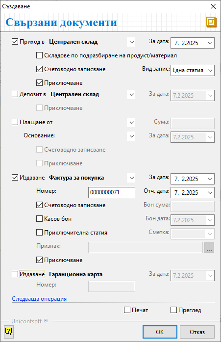

Създаване на документ за покупка#
Въведение#
Търговската операция по покупка на стоки и услуги от страна на контрагент Потребител на продукта се регистрира в системата чрез вътрешнофирмен документ Покупка. В него се описват всички продукти и договорените с доставчика условия на сделката. С валидирането на документа за покупка възниква задължение към доставчика.
Системата дава възможност за генерирация и на останалите документи по сделката - складови, касови, данъчни и други. Това може да стане в момента на приключване или допълнително.
Тези операции могат да бъдат извършени от един потребител или от различни отдели в организацията.
Създаване на покупка#
Процесът по създаване на Покупка е следният:
От Търговска система || Документи за покупка чрез десен бутон на мишката върху списъка с документи се избира Нов документ. Отваря се празна форма за въвеждане на данни.
В раздел Основни трябва да се въведат данни за покупката в секции Общи, Собствени и Доставчик.
От поле Док. Тип се отваря падащ списък за избор на тип документ. Системата предлага по подразбиране тип Покупка, освен когато настройката е изрично променена в Номенклатури || Типове документи.
В реквизит **Док. No** се въвежда номер на документа. По желание системата може да копира този номер при генерацията на свързана фактура за покупка.
В полето **Док. дата** се избира датата, за която се отнася текущата покупка.
> **Основание за прилагане** е реквизитът, определящ вида на сделката.
Системата обзавежда полето с настроеното по подразбиране основание. То може да бъде променено от падащия списък с предварително настроените основания за прилагане от **Номенклатури || Референтни номенклатури**.
В поле **ДДС** се показва процент ДДС, който съответства на избраното основание аз прилагане.
От падащия списък за реквизит **Плащане** се избира начинът на плащане, договорен с доставчика. Системата обзавежда полето с настройките по подразбиране. Такива могат да бъдат дефинирани отделно за всеки контрагент и общо за системата.
Реквизити **Въвел** и **Поделение** се обзавеждат автоматично според настройките на текущия потребител. Ако такива липсват или данните в полетата трябва да бъдат променени, се използват падащите списъци с предварителни настройки.
Данни в секция *Доставчик* се попълват автоматично с избора на **Контрагент**.
Ако търсеният контрагент не фигурира в съществуващия списък, системата позволява въвеждането му в момента.
Всички полета в секция **Доставчик** могат да бъдат коригирани, като се променят настройките на контрагента чрез формата за редакция.
{kind=link}
Списък със закупените продукти се добавя от реда за нов запис.
Най-често използваните полета са:
Продукт/материал — Отваря се форма за избор на продукт. Ако продуктите не са предварително въведени, системата позволява това да се направи в момента чрез десен бутон и Нов продукт.
Партида - В това поле могат да се попълват партидите на получените продукти.
Количество — Въвеждат се получените по документ количества.
Мярка - В това поле системата дава възможност за избор на различни мерни единици.
Падащият списък в полето се обзавежда с настройките за продукта на текущия ред. Списъкът съдържа основна мерна единица за продукта и настроените му фасети на мерки.Цена и Цена с ДДС — В тези полета се посочва единичната цена от получения документ.
В поле Цена се въвежда цената без ДДС, а в поле Цена с ДДС - тази с ДДС. Достатъчно е да се попълни една от цените, при което системата автоматично изчислява другата.
За валидиране на покупката се избира бутон [Приключен] от лентата с инструменти.
Това извежда форма Свързани документи, чрез която могат да се извършат останалите операции:
Приход в (склад) — в полето се поставя отметка, ако стоката е пристигнала в склада и трябва бъде отразена в складовите наличности;
За дата - избира се дата, която системата да попълни като Док. дата в складовия документ;
Складове по подразбиране на продукт/материал - чрез избор на тази опция се вземат предвид настройките на всеки продукт за склад по подразбиране;
Системата ще генерира отделни складови документи, като групира продуктите по складове.Счетоводно записване - при поставянето на отметка системата автоматично ще осчетоводи складовия документ;
За да се обзаведе коректно счетоводната статия, Автоматичен счетоводител трябва да е предварително настроен.Вид запис - поле за избор на формат на счетоводния документ;
При избор на вариант Една статия системата създава счетоводен документ с една статия, включваща продуктите (признаците) в общ списък;
При Ред-статия системата генерира счетоводен документ с множество статии - за всеки продукт се създава отделна счетоводна статия;Приключване - при поставена отметка системата генерира складов документ и автоматично го приключва;
Ако не бъде поставена отметка, системата генерира свързания документ, който остава в състояние на редакция.
Депозит в (склад) - опция за избор на склад и създаване на депозитна разписка, съдържаща настроен амбалаж към продукти;
За дата - избира се дата, която системата да попълни като Док. дата в депозитната разписка;
Приключване - при поставена отметка системата генерира депозитна разписка и автоматично я приключва;
Ако не бъде поставена отметка, системата генерира свързания документ, който остава в състояние на редакция.
Плащане от (каса) — чрез тази опцията се създава разходен касов ордер в избраната каса;
Използва се, когато има плащане в брой.Сума - в това поле се записва фактически изплатената сума по документа за покупка;
Основание: - от падащия списък се посочва основанието за плащане, което системата да обзаведе в касовия документ;
За дата - избира се дата, с която системата попълва Док. дата в касовия документ;
Счетоводно записване - при поставянето на отметка системата автоматично ще осчетоводи касовия документ;
За да се обзаведе коректно счетоводната статия, Автоматичен счетоводител трябва да е предварително настроен.Приключване - при поставена отметка системата генерира касов документ и автоматично го приключва;
Ако не бъде поставена отметка, системата генерира свързания документ, който остава в състояние на редакция.
Издаване (данъчен документ) — опцията се маркира при наличие на данъчен документ към покупката;
От падащия списък се избира тип на данъчния документ.За дата - избира се дата, с която системата попълва Док. дата в данъчния документ;
Номер - в полето се вписва номер на получения данъчен документ;
Ако полето бъде оставено празно, системата ще копира Док. No на покупката като номер и в данъчния документ.Счетоводно записване - при поставянето на отметка системата автоматично ще осчетоводи данъчния документ;
Касов бон - опция за генерация на счетоводен запис за плащане в брой;
Ако е генериран вътрешнофирмен касов документ чрез опцията Плащане от (каса) със счетоводно записване, тук опцията Касов бон не трябва да се маркира.
Бон сума - сума от касовия бон;
Бон дата - дата на касовия бон;
Приключване - при поставена отметка системата създава данъчния документ и автоматично го приключва;
Ако не бъде поставена отметка, системата генерира свързания документ, но той остава в състояние на редакция.
Издаване Гаранционна карта – тази опция се избира, когато към текущата покупка има издаден гаранционен документ;
За дата - избира се дата, с която системата да попълни поле Док. дата в гаранционния документ;
Номер - в полето се вписва номер на гаранционната карта;
Печат и Преглед - опциите се активират чрез поставяне на отметка и позволяват преглед на документа на екран или директното му отпечатване (след избор на шаблон);
Ок - бутонът потвърждава маркираните опции;
Системата генерира избраните свързани документи и валидира покупката.

Чрез бутон [Запис и изход] от лентата с инструменти документът се записва и формата се затваря.
Реквизити#
В раздел Основни:
Док. Тип – поле за избор на тип документ;
По подразбиране системата предлага Покупка-Документ за покупка.Док. No - в полето се попълва номер на документа;
Ако полето остане празно, системата автоматично попълва пореден номер при приключване на документа спрямо настройките в Номератори.Док. дата - в полето се избира дата за текущата покупка;
Операция No. - системата попълва полето автоматично с пореден номер на операцията;
Основание за прилагане - падащ списък за избор на вида на сделката;
Основанията са предварително дефинирани от Номенклатури || Референтни номенклатури.Тип известие - този реквизит се активира и използва единствено в коригиращи документи;
ДДС - показва процент ДДС, настроен за избраното основание за прилагане;
Плащане - поле с падащ списък за избор на начин на плащане;
Въвел - избор на лице, въвело документа, от предварително настроен списък със служители;
Данните в полето се попълват автоматично с настройките на текущия потребител.Поделение - поле с падащ списък за избор на поделение;
Списъкът трябва да е предварително настроени в контрагент Потребител на продукта.Контрагент – в полето се отваря форма за избор на доставчик от списък Контрагенти;
Ако търсеният контрагент не фигурира в съществуващия списък, системата позволява въвеждането му в момента.Адрес - поле с адрес по регистрация на избрания контрагент;
ДДС / Ид. No. - поле с ДДС номер, Булстат или друг идентификатор за избрания контрагент;
Поделение - списък с настроените за контрагента обекти;
От реда за нов запис се обзавежда списък с продукти. Част от полетата, които могат да се попълнят, са:
No. - пореден номер на запис на реда;
Код продукт/материал - полето се обзавежда с настроения основен код за избрания продукт;
Баркод на продукт/материал - полето се обзавежда с баркод за продукта в избраната мярка;
Вендор код на продукт/материал - полето се обзавежда при наличие на настройка с външен код на избрания продукт, предоставен от доставчика;
Вендор име на продукт/материал - полето се обзавежда при наличие на настройка с име на избрания продукт, предоставено от доставчика;
Продукт/материал - отваря форма за избор Продукти и материали;
Партида - попълва се партида за избрания на реда продукт;
От бутона в края на полето системата отваря форма с налични партиди от продукта.Дата на годност на партида - поле с дата на годност за текущата партида на реда;
Страна на произход на партида - избор на страна на произход за текущата партида на реда;
Количество - в полето се попълва количесто за продукта на реда;
Мярка - падащ списък за избор на мерна единица от настроените за продукта на реда;
Цена - поле за попълване на единична цена без ДДС;
Цена с ДДС - поле за попълване на единична цена с ДДС;
ТО% - поле за въвеждане на търговска отстъпка в проценти;
Валута - полето показва валута по редове на документа;
Валута на документа се променя от раздел Допълнителни, след което системата обзавежда валута и по редовете.Ст-ст валута - обща стойност без ДДС за количеството продукти на реда;
Курс - поле с валутен курс за избраната валута;
Разполагаемо кол. - поле с информация за свободни количества на склад;
Наличност на склад - поле с информация за налично количество - общо или за избран склад, включващо резервираните количества;
В раздел Допълнителни:
Реквизити: Дименсии - Тази секция се визуализира, ако за документи за покупка има дефинирани дименсии от меню Номенклатури || Потребителски дименсии.
Реквизити: Доставка
Дата на доставка - избор на дата на изпълнение от страна на доставчика;
Място на доставка - в полето може да се попълни място на доставка на покупката;
Условия на доставка - указва условията на доставката, съгласно кодовете на Incoterms.
Използва се само за документация на сделката. Не се ползва никъде от системата.
Реквизити: Транспорт
Дата на експедиция - избор на очаквана дата на експедиция с куриер или собствено транспортно средство;
Вид транспорт - падащ списък за избор на вид транспорт за доставка;
Различните видове транспорт трябва да се настроят предварително от Референтни номенклатури.Транспортна фирма - отваря форма Контрагенти за избор на транспортна фирма, която ще извърши доставката;
Шофьор - указва шофьор от транспортна фирма, който ще извърши доставката;
Втори шофьор - указва втори шофьор от транспортната фирма, който ще извърши доставката съвместно с първия;
Транспортно средство - указва вид на транспортното средство за доставка;
Реквизити: Плащане
Начин на плащане - указва начин на плащане на остатъчна сума по покупката;
Дата на падеж - избор на дата с падеж на остатъчно плащане по покупката;
Отложено плащане (дни) - автоматично попълва реквизит Дата падеж на плащане спрямо датата на документа;
Валута - избор на валута, в която е уговорено задължението към доставчика;
Курс - указва текущия курс на валутата, в която възниква задължението към доставчика;
Реквизити: Подотчетни лица
Авансов отчет No. - указва номер на авансовия отчет на подотчетно лице;
Получил (купувач) - указва подотчетното лице при генерация на счетоводни документи;
Отговорен (купувач) - указва отговорно лице за проверка при приемане на покупката;
Реквизити: Допълнителни
Дата на ДДС - указва дата на ползване на данъчен кредит, ако е отложен спрямо Отч. дата на документа;
Допълнителен ДДС - указва стойност на допълнителен ДДС за изравняване на Обща стойност с ДДС на документа;
Папка - избор на папката на документа за групиране в Счетоводство;
Реквизити: Други
МОЛ купувач - отпаднал реквизит, който не се използва никъде в системата;
МОЛ доставчик - отпаднал реквизит, който не се използва никъде в системата;
ЛООСО доставчик - отпаднал реквизит, който не се използва никъде в системата;
В раздел Списъци:
СписъциНаправления - В тази секция системата показва списък с всички продукти, въведени в текущата покупка. Всички или само избрани продукти могат да бъдат разпределени като разход към структурни центрове на себестойност, обект/проект и/или финансова структура.
Прикачени файлове - Системата дава възможност от реда за нов запис вдясно да се добавят прикачени файлове. Това става от поле Файл, в което се отваря форма за избор Медия каталог. Каталогът включва предварително настроени от Номенклатури || Медия каталог папки.
Счетоводни записвания - В тази секция системата показва всички счетоводни записвания, генерирани за свързаните документи към текущата покупка.
В раздел Връзки с документи:
Този раздел не съдържа реквизити за настройка. В него системата осигурява пряк път до свързани документи. Ако покупката е валидирана и към нея има генерирани свързани документи, те се визуализират по тип в съответната папка.
От тук свързаните документи могат да бъдат отворени и редактирани.